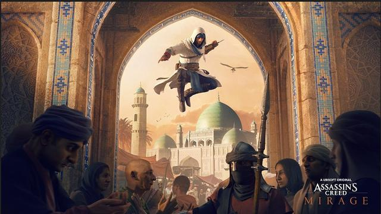

GeForce RTX 4090 Bisa Di-overclok Sampai 3 GHz
Pada acara peluncuran, CEO Nvidia, Jensen Huang mengeklaim bahwa model tertinggi dari seri GPU yang juga dijuluki "Ada Lovelace" tersebut, yaitu RTX 4090 bisa ditingkatkan kecepatan clock-nya (overclock) menjadi 3,0 GHz.
Read more

Ubisoft Umumkan Kehadiran Game Assassins's Creed Mirage
Dikutip dari Polygon, Sabtu (3/9/2022), unggahan itu juga menampilkan ilustrasi dari karakter utama dalam game ini, yakni Basim. Ia diperlihatkan tengah melompat melewati Golden Gate Palace yang ada di Baghdad
Read more